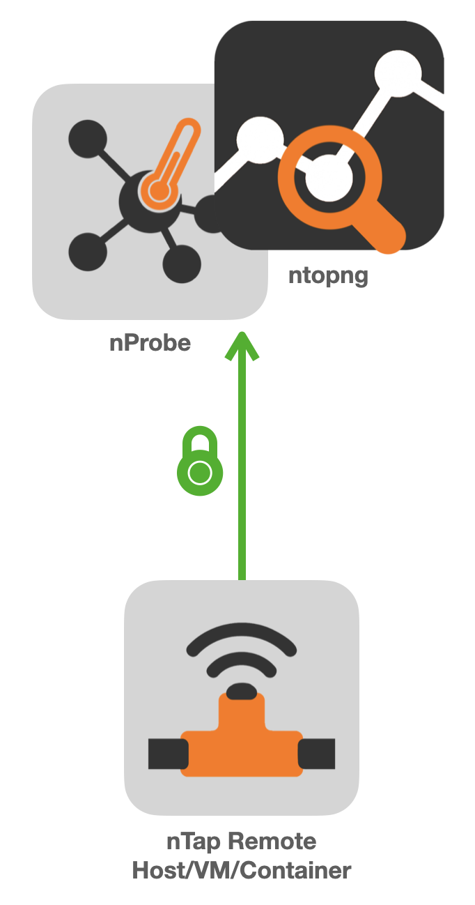

Introduction
nTap is a software Network tap that can be used to provide access to network traffic from a remote location.
nTap can be used in various scenarios including:
cybersecurity: when traffic needs to be inspected traffic for seurity purposes.
visibility: when we need to figure out what is happening on a network.
troubleshooting: when something is not working as expected and we need to drill down up to the packet level.
Architecture
nTap is conceptually divided in two distinct components, nTap collector and nTap remote.
The nTap remote runs on the host where the traffic needs to be captured and sends captured traffic to the nTap collector using end-to-end encryption.
The nTap collector receives traffic from remote taps and:
creates a local virtual ethernet interface to which decapsulated traffic is injected.

(optionally) sends collected traffic to Open vSwitch (a versatile multiplayer switch), encapsulated in VXLAN.

if you plan to use nTap with ntop applications, you can send directly traffic from remote taps to ntop applications without the need of using the collector application.


Containers and Virtual Machines
nTap can be used inside containers and VMs. Typically the tap component is deployed on remote hosts/containers whose IP address can be dynamic. Instead the collector application needs to be active on a host with a static IP address as it needs to receive packets sent by the tap. No license needs to be installed on the host where the tap application runs.
Packets vs Flows
Why do I need to play with packets if I can monitor my network with flows?
A flow is basically a method for “compressing” metadata about packets with the same 5-tuple (IP src/dst, port src/dst, protocol) and creating a short record (called flow) that contains a summary of this communication. The compression rate of a flow is very high as you can report with a single flow several thousand packets. The trick is to instrument nProbe to emit all the information elements that are necessary for carrying on a given task: this is because in a flow you loose things such as packet timing for instance.
In some cases, such as network troubleshooting, you might need access to raw packets as a flow information is too high-level. Other cases where you need raw packets are those where you have an application that you cannot feed with flows such as Wireshark, Suricata or Zeek. These are two typical use cases where packets are compulsory and flows are not an option.
In short:
flows need to be used whenever your monitoring/security application can operate with them. This is because with flows you need to move very little information from the monitored site to the collector side, when compared with packets. In this case please consider using nProbe.
packets have to be used whenever you need access to raw network information and flows cannot be used as too high-level. In this case you need to be prepared to send remotely a lot of traffic (i.e. if you monitor a host attached to a 100 Mbit network, the tap can potentially push 2 x 100 Mbit, RX+TX, of traffic) but if this is the only viable option, nTap is what you are looking for.
Security and Performance
Contrary to many other commercial virtual tap applications, nTap delivers packets over an encrypted channel over UDP. The communication is always unidirectional from the tap to the collector/ntopng/nProbe with no return channel communication: this is a key requirement in order to run nTap on a high-secure network that does not allow a return channel (note that a TCP connection is bi-directional as some packets, such as ACKs, need to be sent back).
The end-to-end encryption uses state-of-the-art symmetrical encryption that takes advantage (when available) of AVX instructions for maximum performance. nTap adds a micro-layer in addition to the original packet where some metadata are placed (eg. packet capture time and length), whereas encryption does not enlarge the original packet size to be transmitted.
For more information about performance please refer to hardware sizing section <sizing.html>.